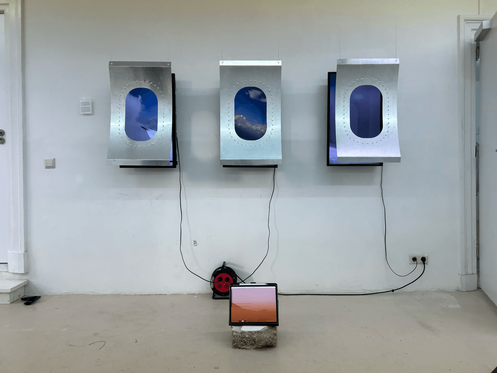
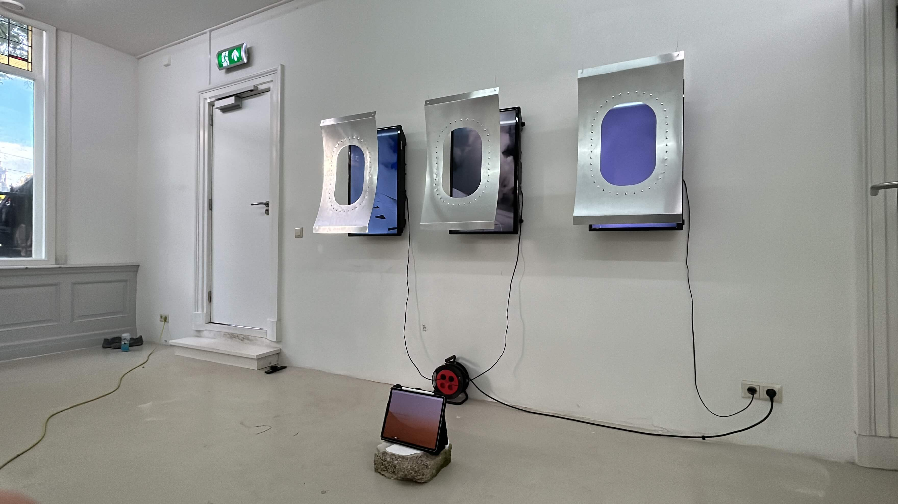
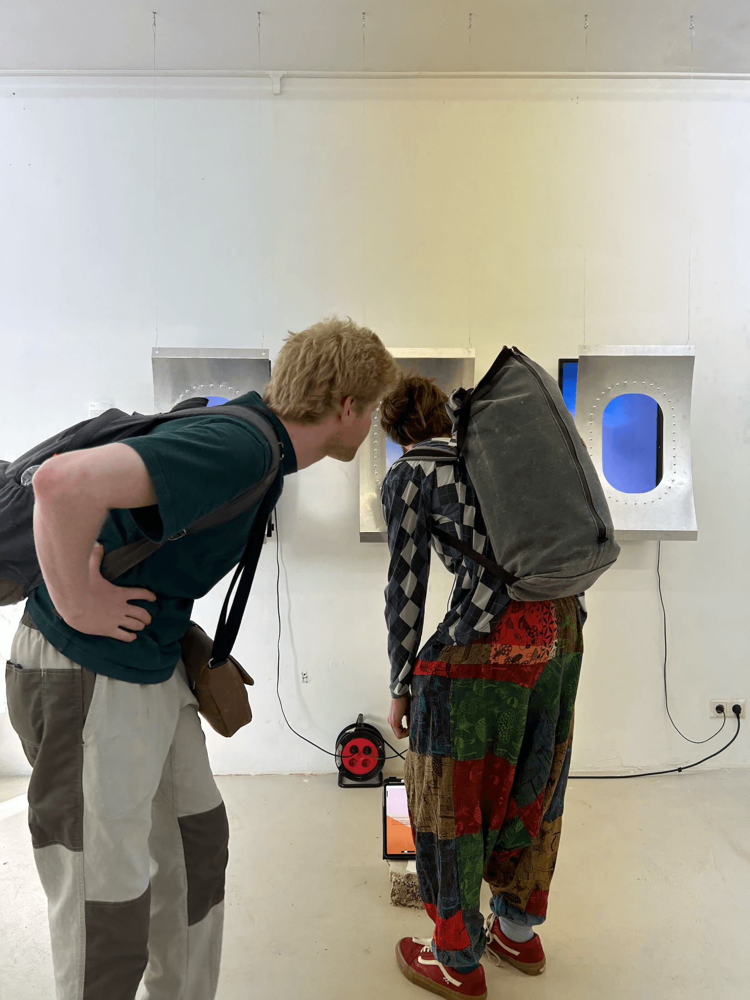

A research project studying the visual aesthetics of private jet culture that
explores a surrealist form of escapism and how it draws people into an illusory
state of mind.
Rooted in utilitarian functions, the origins of aviation are also deeply tied to human
curiosity and desire to explore the unknown. Private jet culture reflects that ambitious
initiative to push possibility to its limits. Though illusory, the visual aesthetics of
luxurious aviation fosters an immersive, mind-altering power that evokes wonder, it draws
our attention to the present moment and offers a spiritual hope that logic alone cannot
explain.
Bespoke Steel Aircraft Windows, Television Screens, iPad Pro, Metal Wire
Installation · Website
The Hague, 2025